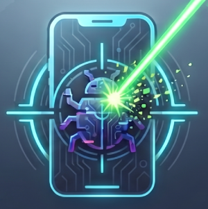

Instalar PhotoDroid
Cuatro pasos. Al final abres la app, conectas el teléfono y ya puedes escanear apps, permisos y procesos.
$ # abre el dashboard y detecta el dispositivo USB
Antes de empezar
Tres cosas. Si las tienes, la instalación es lineal.
-
Python 3.10+
Probado en 3.13. En la terminal:
python --version. -
ADB (platform-tools)
Windows suele traerlo en
%LOCALAPPDATA%\\Android\\Sdk\\platform-tools. Si no está en elPATH, se indica enconfig/settings.json → adb_path. - Android con depuración USB Activa Depuración USB en Ajustes → Acerca del teléfono (varias veces en «compilación») y acepta el diálogo al conectar el cable.
Instalación
Cuatro etapas. Al final arranca con python main.py.
-
1.0 · requisitos
Python y ADB
Necesitas Python 3.10 o superior y Android platform-tools (
adb). En Windows suele estar en%LOCALAPPDATA%\Android\Sdk\platform-tools. Si no está en elPATH, se configura enconfig/settings.json → adb_path. -
2.0 · entorno
Clonar e instalar dependencias
Un virtualenv mantiene PySide6 aislado del sistema.
$ cd PhotonDroid $ python -m venv .venv $ .venv\Scripts\activate # Windows $ pip install -r requirements.txt
-
3.0 · dispositivo
USB y depuración
Activa Depuración USB en el teléfono, conecta el cable y acepta el diálogo de autorización. Comprueba con:
$ adb devices -l # debe aparecer una línea con state=device
-
4.0 · arranque
Abrir PhotoDroid
Lanza la app, pulsa Detect device y abre Scanner para apps, permisos y procesos.
$ python main.py
Primer escaneo en la app
El flujo típico una vez está todo conectado.
| 1 | Conecta el Android por USB y acepta la depuración. |
|---|---|
| 2 | Detect device en la cabecera → modelo, Android y serie. |
| 3 | Scanner → Load apps · Scan permissions · Load processes. |
| 4 | Start scan en el Dashboard → recorrido completo con progreso y log. |
| 5 | Idioma en el selector de la cabecera (8 opciones). |
Si adb devices no muestra el equipo: revisa cable, depuración y el diálogo ¿Permitir depuración USB?.
Estado unauthorized → acepta la autorización en el teléfono. Estado offline → reconecta o reinicia adb.